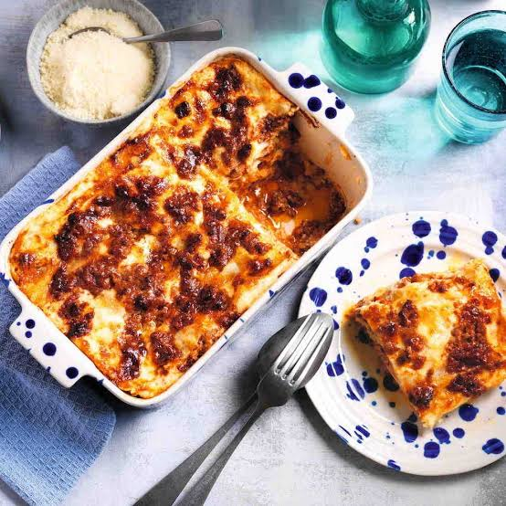

Home
Lasagna

The italian showstopper "La Lasagna"
The first time I saw "La Lasagna" in it's full glory was the Garfield movie.
I knew right then I HAD to have it!
Let's get to the recipe, don't be overwhelmed. It's easier than it looks.
Ingridients
For the sauce
- 500 gr minced meat
- sofritto of onions,celery and carrots
- tomato sauce
For the dish
- lasagna sheets
- mozarella shredded
- beschamel sauce
- parmigiano
Steps
- Fry the sofritto in a little bit of olive oil until it turns golden brown
- Add the minced meat and let it get some color before adding half a glass of wine
- After the wine has evaporated add the tomato sauce and let it simmer for 20 minutes
- Place a spoonful of sauce on the bottom of your pan and place your first lasagna sheet on top
- On top of every lasagna sheet you should have a layer of sauce, a layer of beschamel and shredded mozarella
- On your final layer cover with parmigiano
- Place in the oven at 180 degrees for 35-40 minutes
Enjoy!